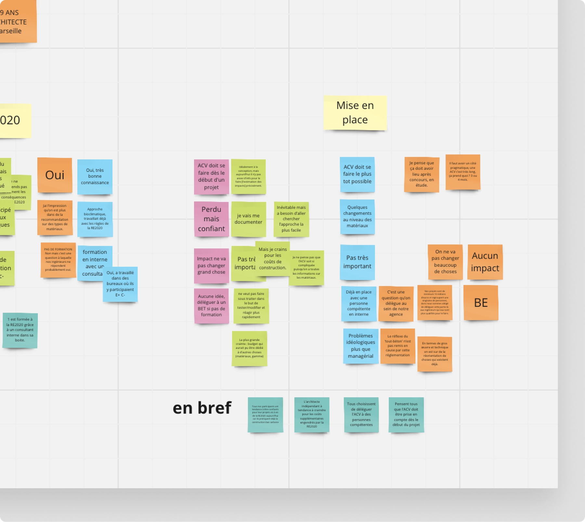
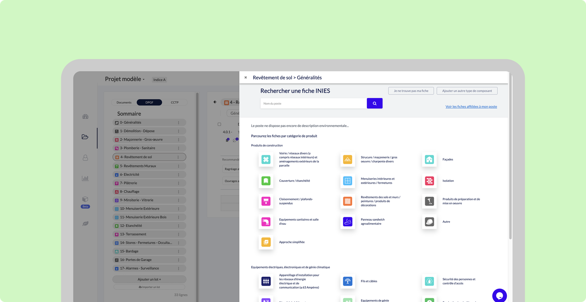
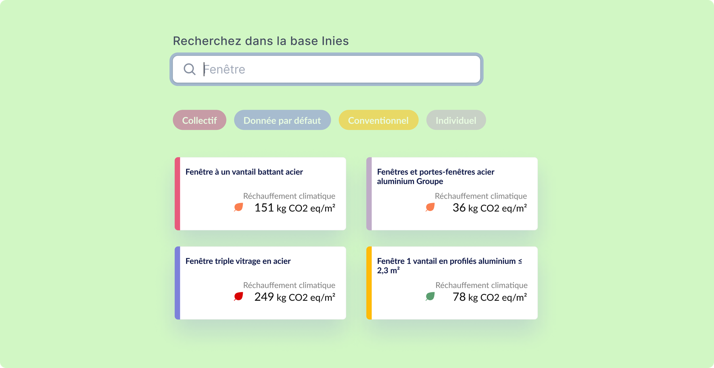
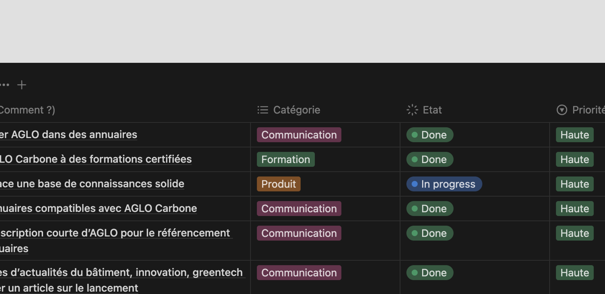
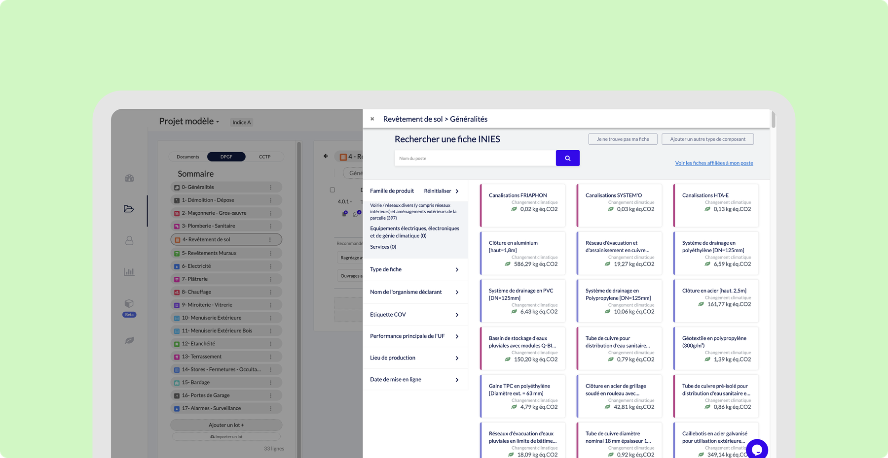
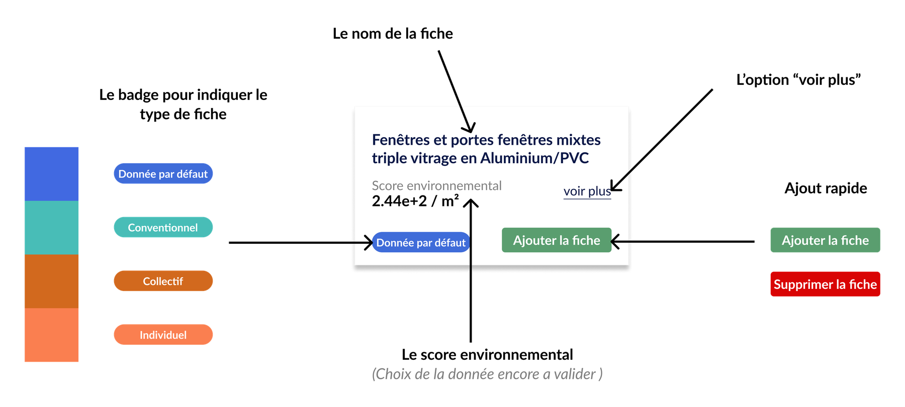
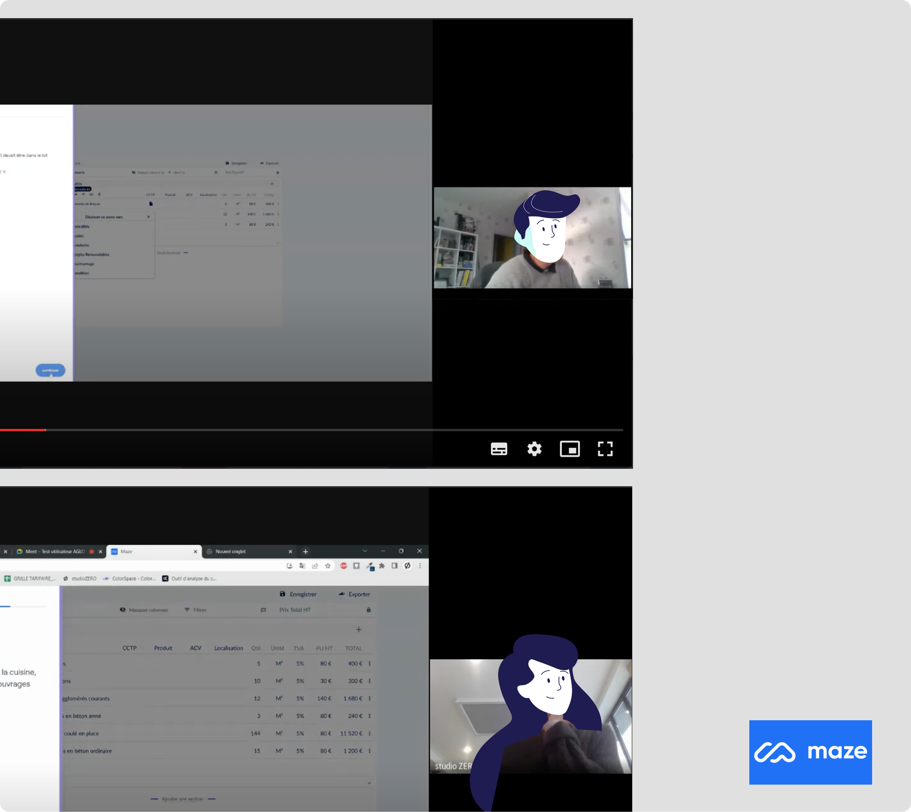
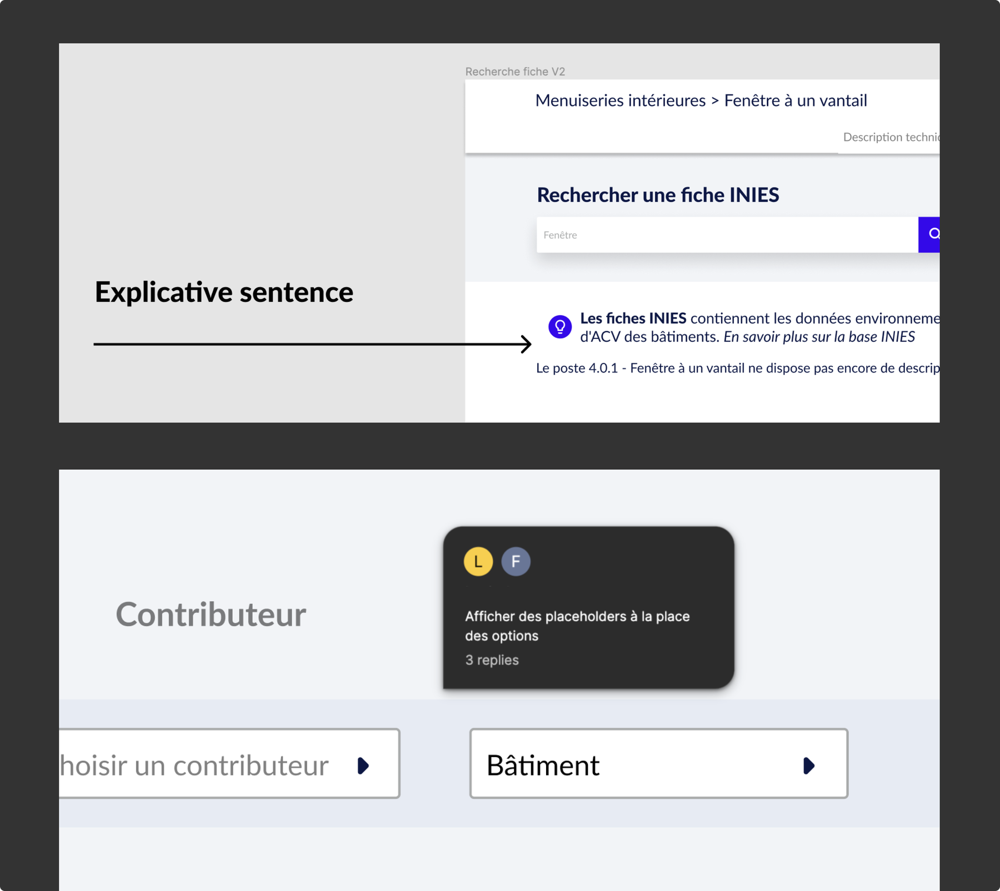
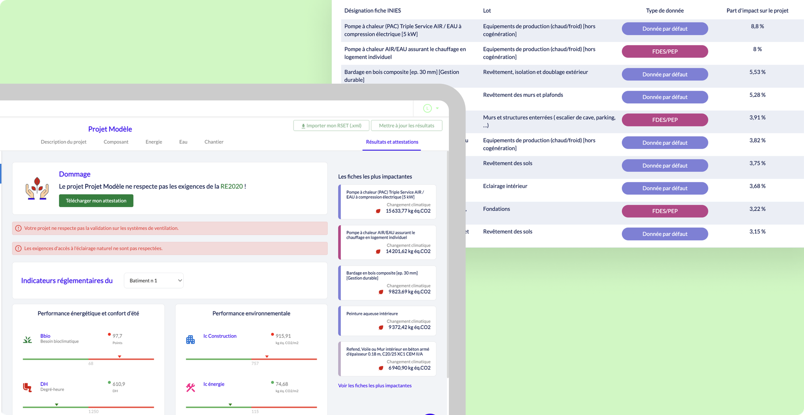
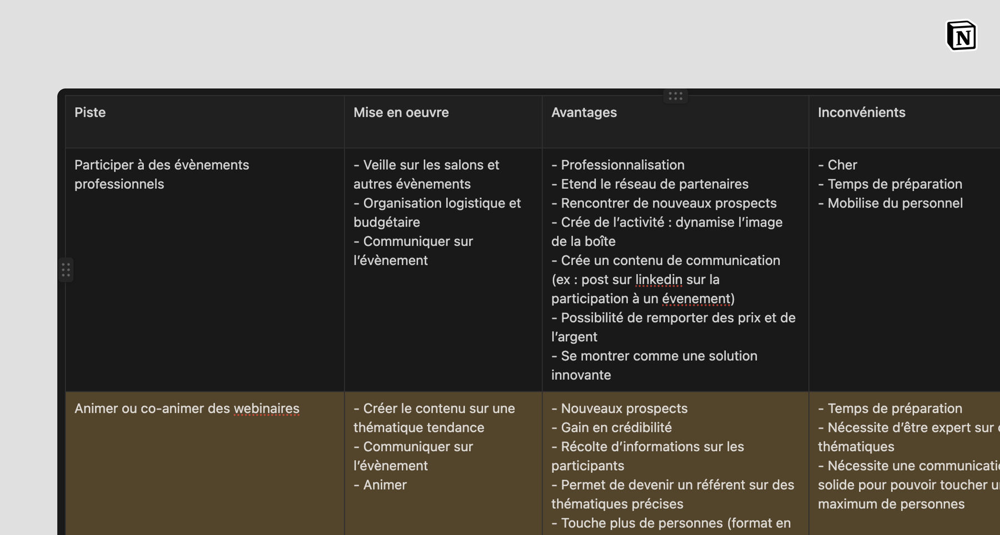

Sensibiliser les utilisateurs à la RE2020 dès la rédaction des pièces écrites, via une fiche carbone associée aux travaux et une attestation conforme aux normes en vigueur.
UX Researcher
UI Designer
Facilitatrice HTML/CSS
Farah Laoud, Product Designer
Louis Bernon, Product Manager
Sylvie Lieou, Ingénieure

Recherche utilisateur / entretiens et cadrage des attentes des architectes face à la nouvelle réglementation.

Recherche de fiche INIES / affiliation pensée sur le modèle d'une recherche produit familière.

Comparaison carbone / chaque solution constructive affichée avec son impact CO₂, pour arbitrer en connaissance de cause.

Cadrage produit / priorisation des chantiers (produit, communication, formation) pour installer AGLO Carbone comme référence.

Bibliothèque intégrée / chaque poste associé à sa fiche environnementale, depuis le tableau de rédaction.

Détail d'une fiche / score environnemental et ajout au projet en un geste.

Protocole de test / prototype validé auprès d'une dizaine d'utilisateurs via Maze, en conditions contrôlées.

Itération / clarification de l'icône et du libellé d'ajout identifiés comme points de friction, avec tooltips explicatifs.

Synthèse réglementaire / conformité RE2020 vérifiée, indicateurs d'impact et attestation téléchargeable.

Vue projet / le calcul carbone intégré au flux de rédaction, sans quitter l'outil.
Module agréé par la DHUP pour la réalisation des études d'impact environnemental dans le cadre de la RE2020, une validation externe de sa fiabilité réglementaire, sur un sujet où AGLO n'avait aucun concurrent établi à qui se comparer.